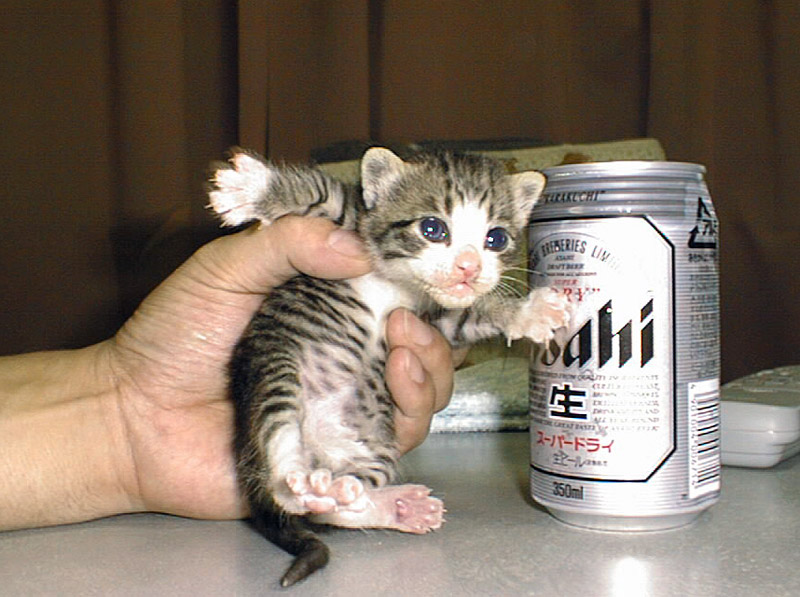

Practice
“While”
We’re going to do a couple things here. First, we’re going to take a look at some sentences. Then, you’re going to make some of your own. Then, you’ll take a look at decks you need to study and move on. This chapter is pretty specific in what you need to learn, so it’s a great opportunity to spend some time reviewing!
Sentences

Sentences for this chapter will be ready when “Practice” Pages catch up to the most recent chapter.
Make your Own Sentences
It’s also good to make your own sentences. I’ll give you some prompts, and your job will be to write out sentences based off these prompts. I’d recommend putting them on Lang-8 to get corrections.
Example:
Prompt: テレビを見ながら (while I watch TV)
Answer: テレビを見ながらうんどうします。(While I watch TV I exercise)
Okay, let’s do some prompts and practice sentences. After you’ve gotten them corrected, consider putting them in your own Sentences deck on Anki?
テレビを見ながら …
あさごはん を たべながら …
でんしゃ に のりながら …
じてんしゃ に のりながら …
おちゃ を のみながら …
しんぶん を よみながら …
エッセー を かきながら …
テレビゲーム を しながら …
はたらきながら …
まちながら …
Come up with sentences for all the above prompts. Make sure you’re:
A) Making the ながら verb the secondary action. Who’s to say which action is primary and which is secondary? Well, that’s up to you, because that all depends on context, but be sure to think of the actions in the sentences you create in this way as you’re creating them.
B) Making sure you’re not talking about two separate subjects. Only one subject per sentence, mmk?
When you’ve finished your sentences, I’d recommend putting them on Lang-8 (or if you have someone who helps you with corrections, that’s fine too… main thing is you’re getting corrections if you can!). When you get your corrections back, you should try to put them in your Sentences deck. It won’t hurt to study them, in fact it’ll be pretty swell if you do.
Catching Up
There are plenty of things to catch up on. It’s easy to fall behind (which is why I’m always stressing on consistency over everything else). Here are some things you might think about looking at to see if there’s any space for review:
- Sentences Deck
- Vocab Deck
- Radicals Deck
- Kanji Deck
How are all these? Any you’ve neglected for a while? Go ahead and take that first step towards getting back in the game and do a round or two on Anki with them. Don’t burn yourself out or anything… just study a little bit. We’re in this for the long term.
Before You Move On
Before you move on, you should have done the following:
- Know ながら
- Know what ながら does to a verb
- Know the special rules about ながら
- Go through Kanji 6.6, know the meanings of all of them
- Download the Kanji decks and study them a bit
- Go through the sentences
- Make your own sentences
- Get your sentences corrected (optional, but highly recommended)
- Check to see if there’s anything you can review.
When everything is looking pretty good, you can move on to the next chapter! It’ll be another chapter that focuses on something specific, giving you a little more time to review and catch up if you need it. Enjoy it while you can, because we’ll be switching back into fifth gear here soon enough.